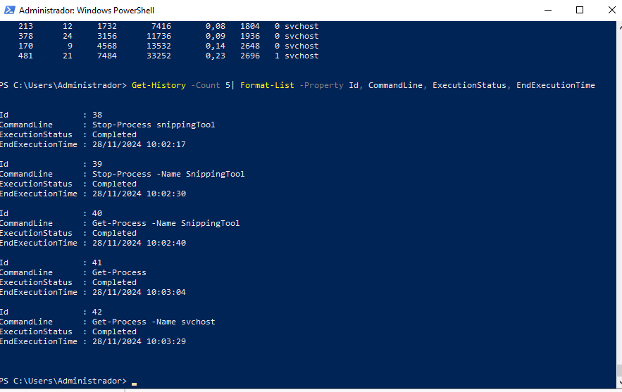
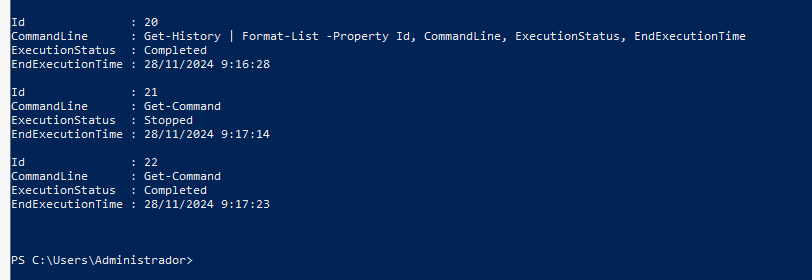
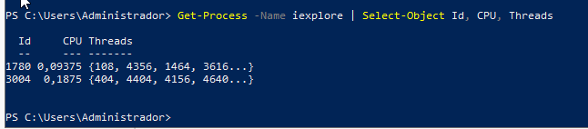
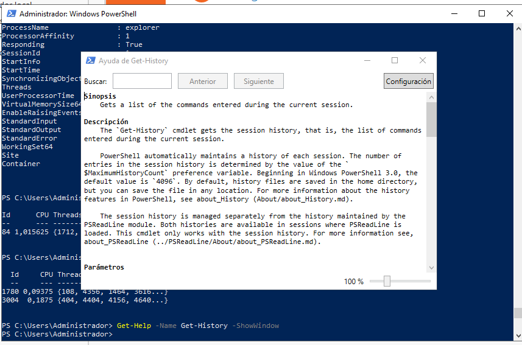
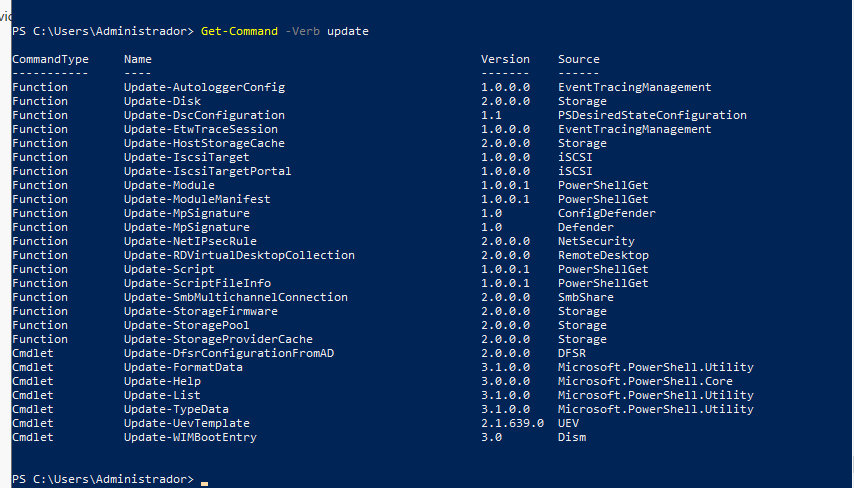
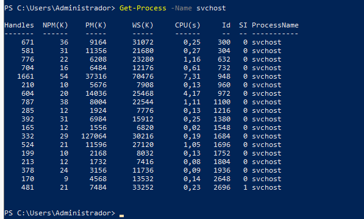

PR0402: Introducción a PowerShell (II)
1. Últimas cinco entradas del historial con detalles

2. Ejecución e interrupción de Get-Command
Comando Get-Command interrumpido:

Comando Get-Command finalizado correctamente:

3. Diferentes estados de ejecución en el historial

4. Mostrar procesos con el nombre msedge
(En este caso, se usó iexplore porque no había Microsoft Edge en el servidor).

5. Función del parámetro -Delimiter en Export-CSV
El parámetro -Delimiter permite definir un separador en el archivo CSV. Por defecto, es una coma (,).
6. Mostrar la ayuda del comando Get-History en una ventana

7. Listar todos los comandos con el verbo Update

8. Ejecutar Recortes y localizarlo con Get-Process

9. Propiedades de los procesos con Get-Process

10. Función del parámetro -MemberType en Get-Member
El parámetro -MemberType permite especificar el tipo de miembro que devuelve el comando.
11. Finalizar la ejecución de la herramienta Recortes

12. Mostrar todos los procesos con el nombre svchost

13. Contar el número de instancias del proceso svchost

14. Listar procesos svchost con detalles en tabla

15. Listar procesos svchost ordenados por tiempo total de procesador

16. Mostrar usuarios del sistema agrupados por la propiedad Enabled

17. Listar usuarios con la cuenta habilitada

18. Listar usuarios con la fecha de su último inicio de sesión